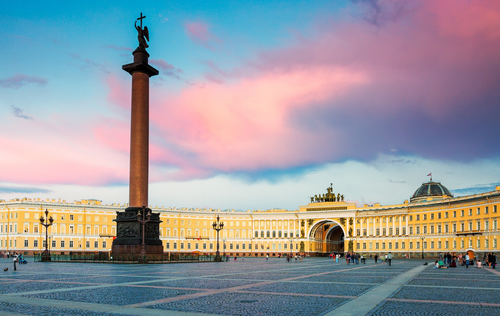
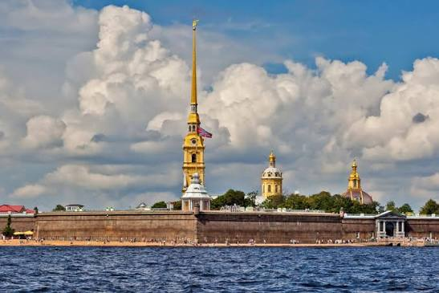
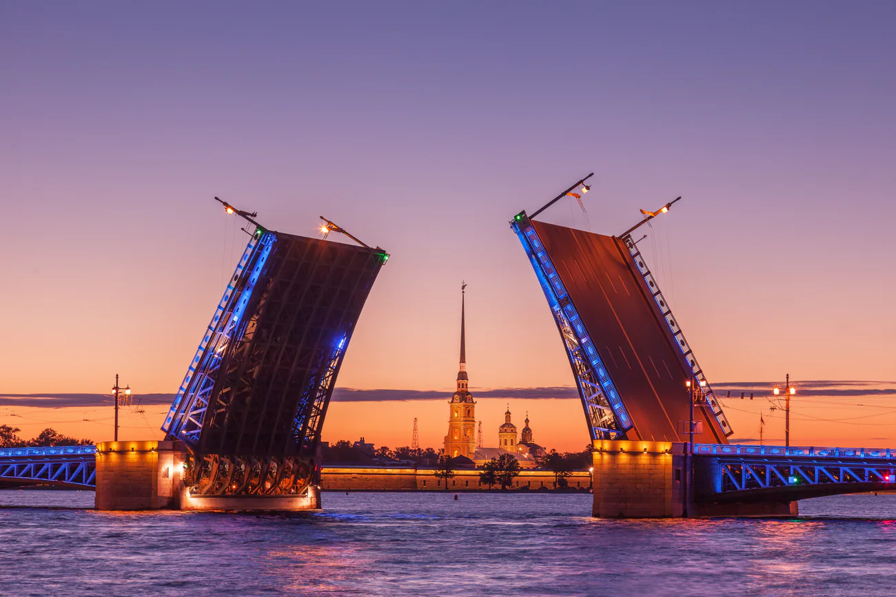
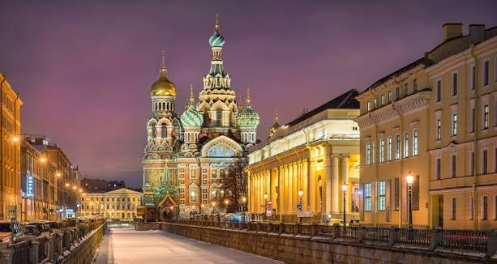
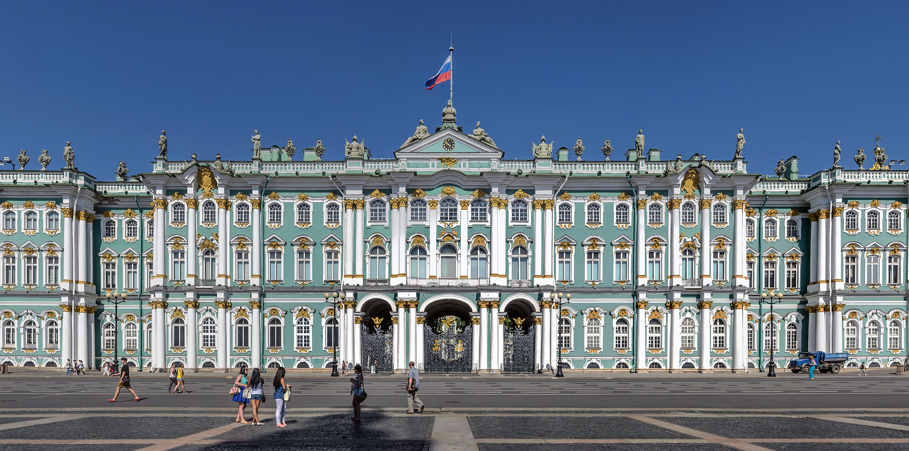
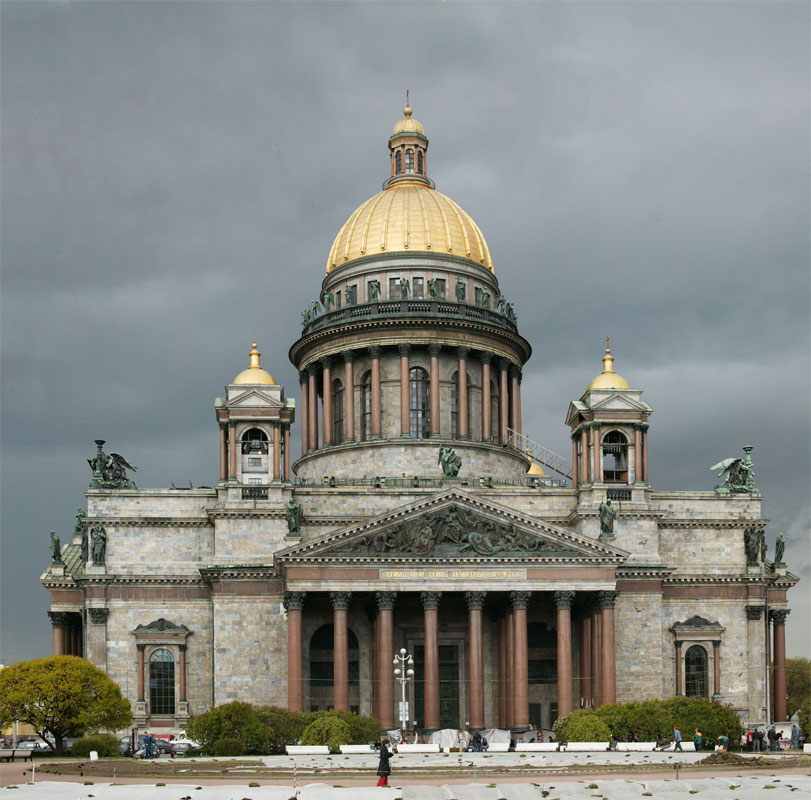
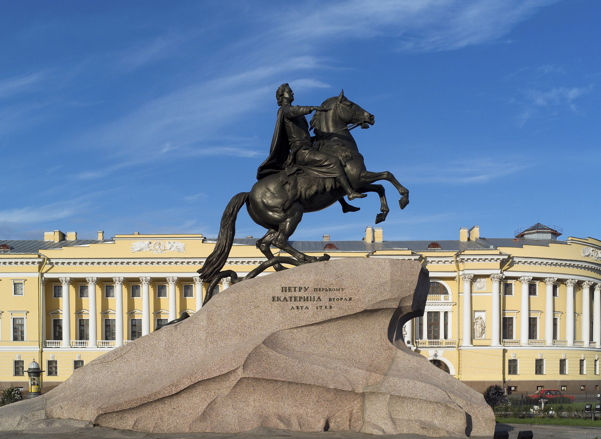

Страна: Россия
Основан: 1703 год
Население: ~5,6 млн человек
Площадь: 1403 км²
Часовой пояс: UTC+3
Для просмотра интерактивной карты рекомендуется использовать сервисы Яндекс.Карты или Google Maps.
Санкт-Петербург был основан Петром I в 1703 году как «окно в Европу». Город служил столицей Российской империи с 1712 по 1918 год. Пережил блокаду во время Великой Отечественной войны (1941–1944), что оставило глубокий след в его истории и культуре. В разные эпохи носил названия Петроград (1914–1924) и Ленинград (1924–1991).




| Фотография | Описание |
|---|---|
 |
Государственный Эрмитаж. Один из крупнейших и самых значимых художественных музеев мира. Коллекция насчитывает более 3 миллионов экспонатов, включая работы Леонардо да Винчи, Рафаэля и Рембрандта. Музей занимает комплекс зданий, главным из которых является Зимний дворец — бывшая резиденция российских императоров. |
 |
Исаакиевский собор. Крупнейший православный храм Санкт-Петербурга, выдающийся памятник русской архитектуры XIX века. Построен по проекту архитектора Огюста Монферрана в 1818–1858 годах. Колоннада собора предлагает панорамный вид на город. |
 |
Памятник «Медный всадник». Монумент Петру I, созданный скульптором Этьеном Морисом Фальконе в 1768–1782 годах. Символ города, воспетый в одноимённой поэме А. С. Пушкина. Памятник установлен на Сенатской площади (бывшей Декабристов). |
Гимн Санкт-Петербурга: «Гимн великому городу» (музыка Р. Глиэра, слова О. Чупрова).
Текст гимна:
Державный град, возвышайся над Невою,
Как дивный храм, ты сердцам открыт!
Сияй в веках красотой живою,
Дыханье твоё Медный всадник хранит.
Ссылки для прослушивания и просмотра: